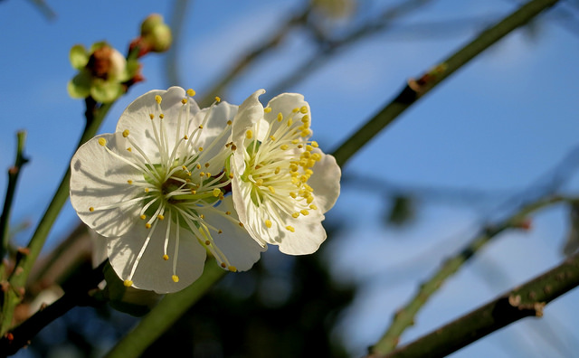
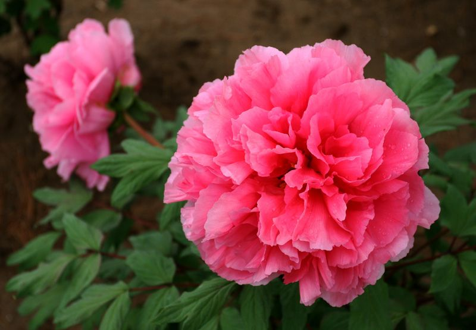
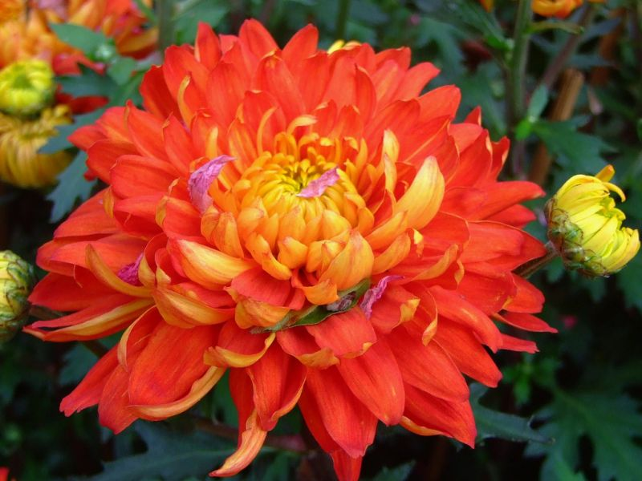
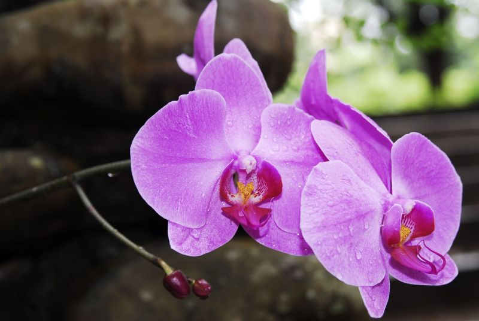
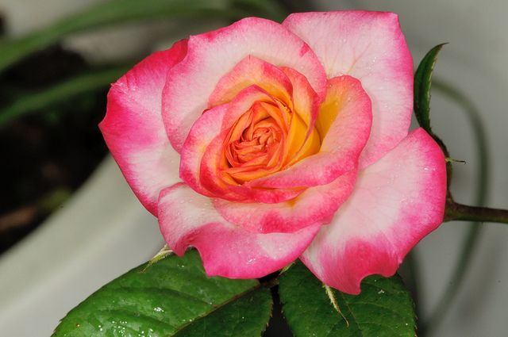
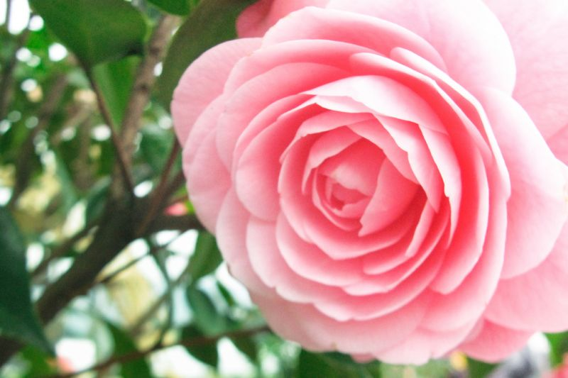
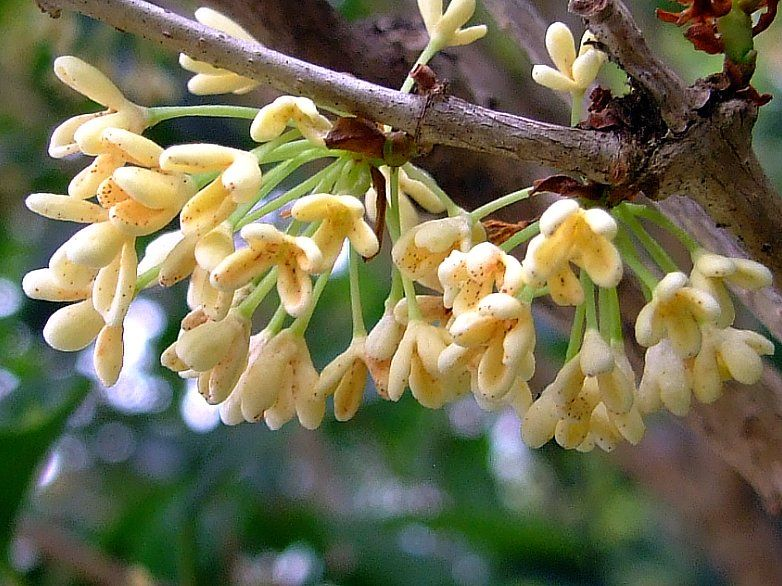
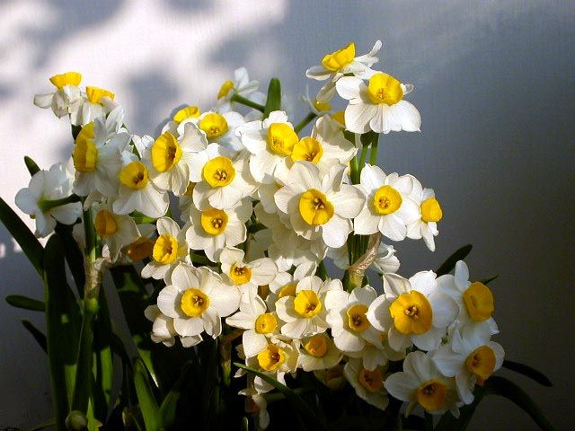

歲寒三友之一
松 🌲
傲骨凌霜・千載常青1. 長壽、青春永駐
2. 亂世逆境中堅忍不屈的君子
松樹四季長青，在寒冬依然姿態挺拔，常與仙鶴一同出現在祝壽圖中，祝賀「松鶴延年、長命百歲」；在儒家文化中更是堅貞節操的最高典範。
「松柏後凋於歲寒，雞鳴不已於風雨。」
「水陸草木之花，可愛者甚蕃。」從周敦頤獨愛蓮之潔白，到古人折柳贈別、歲寒三友、名花知己與草木離情，一站解鎖國中會考最常考的植物品格密碼與經典成語！
文人寄情於草木，賦予植物獨特的人格節操與文化意象（支援真人語音朗讀）
松樹四季長青，在寒冬依然姿態挺拔，常與仙鶴一同出現在祝壽圖中，祝賀「松鶴延年、長命百歲」；在儒家文化中更是堅貞節操的最高典範。
竹子生命力極強，夏不畏酷暑、冬不屈霜雪、生不避貧壤、伐後可復生。修長挺拔，內部「中空」象徵謙遜虛懷，外在「有節」象徵高風亮節與操守。
群花凋落後的隆冬季節，唯獨梅花傲立雪中獨自綻放，清香幽遠。宋代林逋隱居西湖孤山，以「梅妻鶴子」流芳千古。
生長在深山荒谷，不因無人欣賞而不芳，香氣清幽淡雅，氣質脫俗。代表孔子所讚譽「人不知而不慍」的真君子風度，屈原亦在《離騷》中佩蘭自況。
深秋凌霜盛開，不與百花爭春。東晉陶淵明罷官隱居，唯獨愛菊，從此菊花成為文人不隨流俗、淡泊名利的最佳心靈投射。
生於污濁淤泥中卻不被污染，亭亭玉立，香遠益清。周敦頤著《愛蓮說》，以蓮花自勉在複雜俗世中保持清白操守，可敬而不可輕侮。
古人送別時總希望友人留下，柳絲柔長，象徵離愁牽纏不絕。「折柳相送」成為灞橋送行的千古風俗，借柔軟枝條傳遞無盡挽留之情。
傳說桃為仙木神果，壽宴必備壽桃以求吉利延壽；桃花色彩豔麗，古詩經常用以比喻少女青春美貌；陶淵明寫《桃花源記》後，桃花更化身為心靈烏托邦。
又稱「相思豆」。色澤晶瑩鮮紅，永不褪色，外型如跳動的心臟。常作為男女定情饋贈之物，文人雅士亦以此物互贈寄託深厚知己或故人之情。
動人的歷史傳說與歷史人物，豐富了花木的花語與精神靈魂
戰國時期楚國愛國詩人在《離騷》中曾以此花自喻其芳德操守。詩人最終因朝政腐敗無道、群小讒諂，政治理想破滅，悲憤投汨羅江自盡以明其志。
詩人敘述一位武陵漁夫沿溪前行偶遇繁盛花林，落英繽紛，進而發現與世隔絕、阡陌交通的和平村落。在詩文中寄託了作者心中永恆的無階級烏托邦。
傳說古蜀國君王死後化為子規鳥（杜鵑鳥），每逢暮春時節日夜哀哀鳴叫，口中啼血，將漫山遍野的花朵盡皆染得緋紅，寄寓刻骨銘心的哀思眷戀。
北宋高士隱居於杭州西湖孤山，長達二十餘年足跡不入城市，終生不仕、不娶妻室，唯植梅為妻、蓄鶴為子，享受超然物外的逍遙隱逸生活。
花朵碩大豐腴，國色天香，富貴昌盛。傳說女皇遊上苑下令嚴冬百花齊放，唯此花傲然抗命不遵。女皇大怒將其貶謫洛陽，不料來春盛開轟動天下。
陶淵明不為五斗米折腰，躬耕東籬採菊，使菊花成為無欲則剛的隱士靈魂伴侶。
林逋隱居西湖孤山，不慕仕途，「梅妻鶴子」，相守一生，賦予梅花深情高節。
東晉王徽之（字子猷）借宿空宅亦必命植竹，傲然道：「何可一日無此君！」以竹比君子。
周敦頤（號濂溪先生）著《愛蓮說》，盛讚蓮花出淤泥不染，確立蓮花為君子至德象徵。
桃花源中百姓為避秦時戰亂入山，在桃花盛開之處享受怡然自樂，桃花是其庇護者。
三國名醫董奉治病不收錢，只令患者種杏樹，成杏林仙話，「杏林春暖」成醫界美譽。
從花中之魁、花中之王到凌波仙子，領略十大傳統名花的詩韻典故、風姿特徵與開花時節（支援高清看圖與詩詞語音朗讀）








掌握語文中蘊藏的花木成語，精準辨析容貌儀態與會考易錯陷阱（點擊方框即時揭曉）
點擊揭曉
【字詞】：萱（萱草/忘憂草）
【釋義】：借指父、母親雙親（椿萱並茂）。古稱父為椿庭，母為萱堂。
點擊揭曉
【字詞】：蓮（蓮花）
【釋義】：形容口才極佳、說話生動動聽。亦作「舌燦蓮花」。
點擊揭曉
【字詞】：桃（桃花）
【釋義】：崔護名句「人面桃花相映紅」。比喻重臨故地，追憶思念心上人卻人事皆非。
點擊揭曉
【字詞】：桂（桂花）
【釋義】：蘭草與桂樹一同飄香。比喻子孫賢良顯達、榮耀門楣，家族繁榮興旺。
點擊揭曉
【字詞】：曇（曇花）
【釋義】：曇花多在夜間短暫盛開。比喻美好的人或事物出現後極其短暫迅速地消失。
點擊揭曉
【字詞】：蘭（蘭花）
【釋義】：蕙草般潔淨、蘭花般純芳。比喻女子心地芳潔善良、品德高雅脫俗。
請點選 ○ 或 ╳ 進行即時互動辨析，綠色為正確、紅色為錯誤提示！
從古典詩詞中的「草」透視離愁與鄉情，掌握會考高頻出現的植物借喻成語
點擊揭曉
【字詞】：蘭
【說明】：空谷中的幽蘭。比喻人品高潔、超塵脫俗、幽雅不慕虛名。
點擊揭曉
【字詞】：芝（芝蘭）
【說明】：謝安問子弟。比喻德才兼備、優秀有出息的子弟晚輩。
點擊揭曉
【字詞】：蓬（蓬草）
【說明】：蓬草編成的門扉。客套話，形容貴客光臨簡陋居室，使主人增光不少。
點擊揭曉
【字詞】：艾（臭艾）
【說明】：香蘭與臭艾一同被燒。比喻好的壞的一同毀滅、玉石俱焚。
點擊揭曉
【字詞】：芒（芒刺）
【說明】：芒刺扎在背上。形容極度惶恐、畏縮不安，坐臥皆不得安寧。
點擊揭曉
【字詞】：藍（藍草）
【說明】：荀子勸學。靛青色從藍草中提取卻比藍草更青。比喻學生勝過老師，後起之秀超越前輩。
即時檢測學習成效，包含傳說典故、知己配對、是非辨析與成語陷阱精解
自選花木意象、寫作情境與修辭技法，一鍵組合生成文采斐然之佳句範例
整合「花花語文練習神器」與「詩詞常見意象練習神器」，支援 3D 翻轉卡片、意象測驗、是非速測與離線錯題本